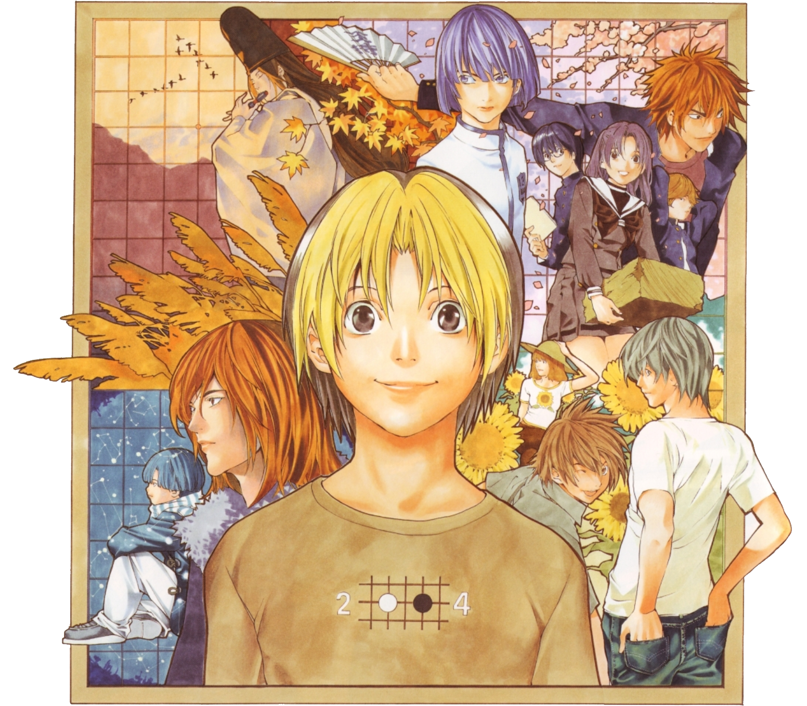
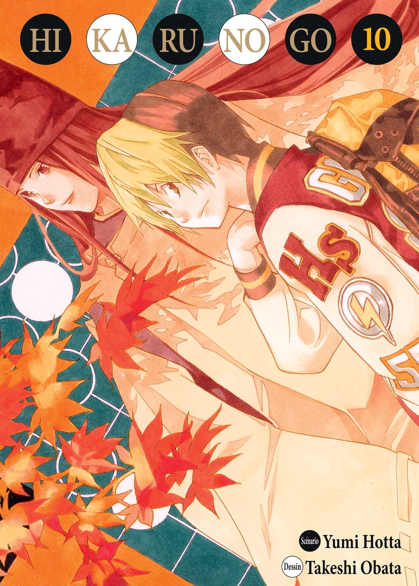

Plot of the story
 While exploring his grandfather's shed, Hikaru Shindo stumbles across a Go board haunted by the spirit of Fujiwara-no-Sai, a Go player from the Heian era. Sai wishes to play Go again, having not been able to since the late Edo period, when his ghost appeared to Honinbo Shusaku, a top Go player of that period. Sai's greatest desire is to attain the Kami no Itte (神の一手, "Divine Move") – a perfect move. Because Hikaru is apparently the only person who can perceive him, Sai inhabits a part of Hikaru's mind as a separate personality, coexisting, although not always comfortably, with the young boy.
Urged by Sai, Hikaru begins playing Go despite an initial lack of interest in the game. He begins by simply executing the moves Sai dictates to him, but Sai tells him to try to understand each move. In a Go salon, Hikaru twice defeats Akira Toya, a boy his age who plays Go at professional level, by following Sai's instruction. Akira subsequently begins a quest to discover the source of Hikaru's strength, an obsession which will come to dominate his life. Hikaru becomes intrigued by the great dedication of Akira and Sai to the game and decides to start playing solely on his own. He is a complete novice at first, but has some unique abilities to his advantage; for instance, once he has a basic understanding of Go, he can reconstruct a game play by play from memory. Through training at Go clubs, study groups, and practice games with Sai, he manages to become an Insei and later a pro, meeting various dedicated Go players of different ages and styles along the way. He also demonstrates a natural talent for the game and remains determined to prove his own abilities to Akira, Sai, and himself.
Manga
Written by Yumi Hotta and illustrated by Takeshi Obata, Hikaru no Go was serialized in Weekly Shōnen Jump magazine from January 8, 1999, to July 14, 2003.Go professional Yukari Umezawa (5-dan) provided "supervision" for the series. The 189 chapters were collected into 23 tankōbon volumes by Shueisha; the first published on April 30, 1999 and the last on September 4, 2003.A kanzenban version was published in 20 volumes between February 4, 2009 and April 30, 2010.In 2012, the manga was published in a 12-volume bunkoban edition between February 17 and July 18.
Viz Media acquired the North American English-language rights to Hikaru no Go in June 2003. The series debuted in the January 2004 issue of Viz's Shonen Jump magazine, released in December 2003. However, after the April 2008 issue it was replaced by Slam Dunk. They released all 23 collected volumes from May 19, 2004 to May 3, 2011.
Animation
Hikaru no Go was adapted into an anime television series by Studio Pierrot. It was broadcast on TV Tokyo from October 10, 2001 to March 26, 2003 for 75 episodes. A New Year's Special titled Hikaru no Go: Journey to the North Star Cup (ヒカルの碁 スペシャル 北斗杯への道, Hikaru no Go Hokuto-hai e no Michi) aired on January 3, 2004.
Viz Media acquired the North American English-language rights to the Hikaru no Go anime at the same time as the manga, in June 2003. The Ocean Group produced an English voice dub for the series. A "Sneak Preview" DVD of the first episode was included in the January 2006 issue of Shonen Jump (Volume 4, Issue 1) to subscribers. Viz began releasing the series on DVD on December 27, 2005. However, only eleven volumes were released (covering 45 episodes) before they were officially discontinued in April 2008. Hikaru no Go debuted on ImaginAsian TV in the United States on May 2, 2006. Each episode aired in subtitled Japanese every Tuesday, before the English dub of the same episode was shown on Saturday. It premiered on the online streaming service Toonami Jetstream on July 14, 2006, and ran until the service shut down in January 2009 with only three episodes remaining. The entire series was added to Netflix in 2011.
——Wikipedia